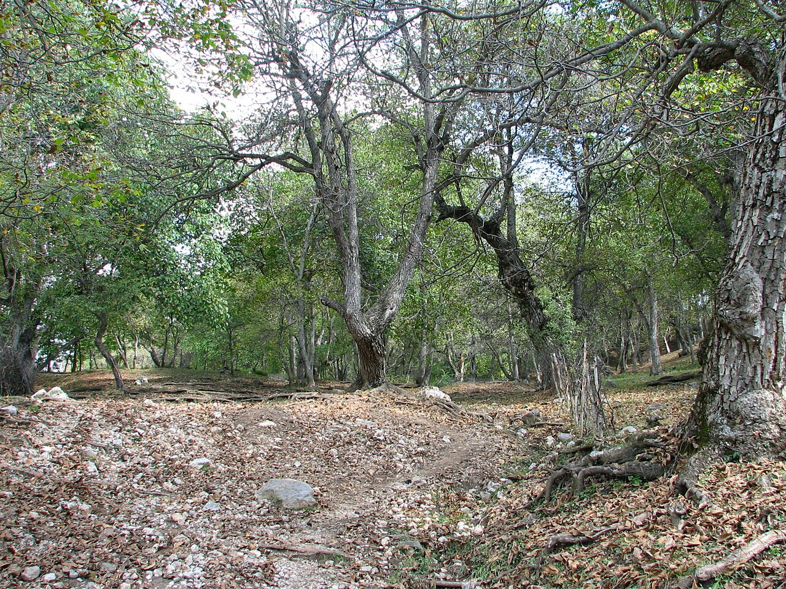

Qirg‘iziston va Xitoy organik mahsulotlar sertifikatini o‘zaro tan olish sari harakat qilmoqda
17-sentabr kuni Bishkekda SAMR delegatsiyasi bilan uchrashuvda ikki mamlakat organik sertifikatlash tizimlarini o‘zaro tan olish bo‘yicha printsipial kelishuvga erishdi. Maqsad — Qirg‘iziston organik mahsulotlarining Xitoyga eksportini soddalashtirish.

Qirg‘iziston va Xitoy organik mahsulotlar sertifikatini o‘zaro tan olish bo‘yicha ishni boshlashga kelishib oldi. Bu Qirg‘iziston organik qishloq xo‘jaligi mahsulotlarining Xitoy bozoriga chiqishini soddalashtirishi mumkin.
Qishloq xo‘jaligi vazirligi matbuot xizmati ma’lumotiga ko‘ra, 17-sentabr kuni Xitoyning Bozorni tartibga solish davlat boshqarmasi (SAMR) delegatsiyasining Bishkekka ish safari chog‘ida taraflar organik sertifikatlash tizimlarini o‘zaro tan olish bo‘yicha printsipial kelishuvga erishdi.
Kelishuvning maqsadi — Qirg‘iziston organik mahsulotlari eksportini soddalashtirish va kengaytirish, ishlab chiqaruvchilar uchun ma’muriy va moliyaviy to‘siqlarni kamaytirish.
Ishchi guruh va tayyorgarlik
Birgalikdagi ishchi guruh organik standartlar va texnik talablarni uyg‘unlashtiradi. Shuningdek, qirg‘iz mutaxassislari uchun o‘quv kurslari va amaliyotlar (stajirovkalar) tashkil etish masalasi ham muhokama qilindi.
Muhim cheklov
O‘zaro tan olish sertifikatlashning bir bosqichini olib tashlaydi, ammo boshqa import talablarini bekor qilmaydi. Eksportchilar baribir Xitoyning alohida sanitariya va ro‘yxatga olish talablariga (CIFER tizimi) rioya qilishi kerak.
Bundan tashqari, Xitoy bozoriga barqaror chiqish uchun izchil ta’minot, sovutkichli saqlash (cold storage) va ishonchli chegaralararo transport zarur.
Organik soha
2026-yil iyun oyi oxiriga kelib, Qirg‘istonda 101 000 dan ortiq gektar maydon organik ishlab chiqarish tizimida edi.
- 11 400 gektar — xalqaro standartlarga javob beruvchi 11 ta kooperativ tomonidan ishlanadi
- 85 300 gektar — Ishtirokchilik kafolati tizimi (PGS) doirasida
Hukumat sertifikatlangan organik yerlarni 2029-yilgacha taxminan 200 000 gektarga kengaytirishni, organik ishlab chiqarish va eksport ulushini esa 25 foizga yetkazishni maqsad qilgan.
Savdo raqamlari
2025-yilda Qirg‘istonning qishloq xo‘jaligi va oziq-ovqat eksporti taxminan 378 million dollarni tashkil etdi; ekin mahsulotlari esa taxminan 80,7 million dollarga to‘g‘ri keldi. Qishloq xo‘jaligi umumiy eksportning qariyb 13,3 foizini tashkil qiladi.
Xitoyga eksport bo‘yicha allaqachon 8 ta protokol imzolangan — ular loviya, parranda go‘shti, jun va kashmirni qamrab oladi. Qirg‘iziston organik mahsulotlari orasida loviya, o‘rik va yong‘oq bor.
Raqamlarda
- Organik tizimidagi maydon: 101 000+ gektar (2026-yil iyun oxiri)
- Xalqaro standartga mos: 11 400 gektar (11 kooperativ)
- PGS tizimida: 85 300 gektar
- 2029-yilgacha maqsad: ~200 000 gektar; organik ulushi 25%
- Qishloq xo‘jaligi/oziq-ovqat eksporti: ~378 mln $ (2025)
- Ekin mahsulotlari: ~80,7 mln $ (2025)
- Qishloq xo‘jaligi eksportdagi ulushi: ~13,3%
- Xitoyga imzolangan protokollar: 8 ta (loviya, parranda, jun, kashmir)
- SAMR delegatsiyasi Bishkekda: 17-sentabr 2026
Nega bu muhim
Organik sertifikatlashni o‘zaro tan olish qirg‘iz ishlab chiqaruvchilari uchun bir sertifikatlash bosqichini soddalashtirishi mumkin. Biroq amaliy eksport imkoniyati Xitoyning boshqa talablariga rioya qilish va logistika zanjirining ishonchliligiga bog‘liq bo‘lib qoladi.